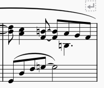
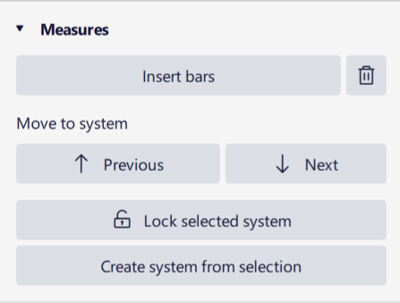
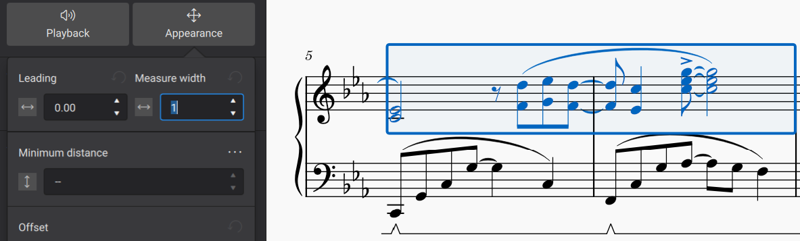

Systems and horizontal spacing
The horizontal spacing algorithm in MuseScore determines the minimum amount of space each measure requires, and will add them onto a system until there is not enough space for the next measure, at which point it will start a new one. This is similar to laying out words in a word processor.
This will produce acceptable results in almost all cases, but there are many situations where you may want to control this behaviour, and explicitly specify where system breaks should occur, or specify that a system should be made up of a specific range of measures, even if they do not technically 'fit' perfectly.
Features
The main tools used to control systems and horizontal spacing are described below.
System breaks
A system break causes MuseScore to end a system after a specific measure or horizontal frame, even if more measures would fit. To add a system break, select a measure (or any element within it) or a frame, and then click the System break icon in the Layout palette:

You can also use the keyboard shortcut Enter. Both methods of adding breaks also work while in note input mode.
Pressing Enter on a text item will enter text editing mode, but doing so on any other type of item in a measure will create a system break on that measure.
After adding a break, the icon will appear above the measure you added it to:

As with other formatting elements, system breaks will not print, and their on-screen display can be toggled via the Properties panel.
System locks
System locks are a way to guarantee that a specific range of measures will form a single system without breaking.
There are several ways to create a locked system. In the Measure section of Properties, which is available when a measure or range of measures is selected, there are four new buttons, with corresponding keyboard shortcuts:

- Previous (Alt+Up; macOS: Option+Up) moves the selected measure(s) to the previous system, and locks that system
- Next (Alt+Down; macOS: Option+Down) moves the selected measure(s) to the next system, and locks that system
- Lock selected system(s) (Alt+L; macOS: Option+L) locks or unlocks the system(s) containing the selected measure(s), as they currently stand; this works as a toggle
- Create system from selection (Alt+S; macOS: Option+S) creates a locked system from the selected measure(s) only.
The shortcut Ctrl+Alt+L (macOS: Cmd+Option+L) will lock the current layout of all systems in the score.
A locked system is indicated by a padlock symbol at its right-hand end. When selected, a bar will be shown across the locked system to show its extent (which may seem redundant in page view, but is more useful when in continuous view):

It is important to understand that both the start and end of a locked system are fixed, which means that the end of the previous system is also fixed, in effect (even if that system is not itself locked, or there is no explicit system break there).
There are some caveats for system locks. This feature will allow you to force as many measures onto a system as you like, even if the results are graphically catastrophic; MuseScore is able to compress more onto a system than it normally would and will compress the spacing graciously, but only up to a certain point. Also, locked systems - by their very definition - will never reflow, so it is best to start adding locks only once basic layout decisions about page and staff size have been made. If you want a responsive layout that works with different page sizes, they are best avoided.
System locks can be particularly convenient when laying out instrumental parts. Once you have identified a good place for a page turn in a part and added a page break, it is then quick and easy to move measures between systems (using the Previous and Next buttons, or the corresponding shortcuts) to even out the spacing as necessary, and the systems will gradually become locked as you do so.
System locks will be removed when changes are made which cause significant changes to a score's layout which may contradict the lock or make a nonsensical result. In particular, this will occur when a locked system contains a multi-measure rest, and an action causes the rest to ungroup: this includes switching multi-measure rests off, or revealing a new instrument or staff. Creating a system or page break within a locked system will also remove a system lock.
For these reasons, it is often sensible to wait until the later stages of working on a score before fixing down the layout with system locks.
Before the system locks feature was available in MuseScore Studio, it was possible to achieve a similar result by applying the Keep measures on the same system layout item (available in the Layout palette) to all the measures in the range. This item should no longer be used for this purpose, and a system lock should be used instead. The item still has a limited valid use, which is simplt to specify that a system break should not occur at a certain position (this is like a 'non-breaking space' in a word processor). This is useful for 2-bar and 4-bar measure repeats, for example, where these items are added automatically.
Layout stretch
You can increase or decrease the width of measures, and their contents will stretch accordingly. The calculated width of a measure is multiplied by a layout stretch factor that you can set numerically for selected measures, but you can also use commands to increase or decrease the stretch of selected measures directly without needing to set a specific number.
To change the layout stretch directly, you can select one or more measures, then use one of the commands in Format → Stretch:
- Increase layout stretch: increase the width of the measure (shortcut: })
- Decrease layout stretch: decrease the width of the measure (shortcut: {)
- Reset layout stretch: reset the width of the measure.
To set the layout stretch value numerically, you can select one or more measures and then set the Measure width in the Appearance section of the Properties panel:

Each press of } or { increments or decrements this value by 0.1.
You can also set this value for a single measure by right-clicking it, selecting Measure properties, and setting Layout stretch in the resulting dialog.
If you need to compress the width of measures in order to fit more onto a system than would fit by default, it is better to use the system locks feature instead.
Horizontal frames
A horizontal frame is a container for empty space, text, or images, that can be placed between measures in a score. Although you can place text or images within horizontal frames (see Using frames for additional content), one of their main purposes is to create empty space within systems, as shown below.
To add a horizontal frame to your score, select a measure and then click the Insert horizontal frame icon in the Layout palette:

The frame will be inserted in front of the selected measure. If the measure is at the beginning of a system, the frame may actually appear at the end of the previous system, if there is room.
You can also use the commands in the Add -> Frames menu.
You can then change the width of the frame using the Width setting in the Properties panel, or by selecting the frame and dragging its handle or using the Left and Right cursor keys to change the width. Keyboard adjustment occurs in steps of 0.5 sp, or 1.0 sp if you hold Ctrl (Mac: Cmd).
- Insert horizontal frame: insert a horizontal frame before the selected measure
- Append horizontal frame: append a horizontal frame to the end of the score
Tasks
Creating a space between measures
To create a space between two measures, select the second measure, then insert and adjust a horizontal frame as described above.
Creating space at the beginning or end of a system
To create extra space at the beginning or end of an individual system, add horizontal frame. For the first system of a score, the First system indent style setting (in Format -> Style -> Score) automatically creates space. See Score size and spacing for more information. You may want to create separate sections with a "Section Break" instead, when you think of extra space at the end of an individual system, see Using sections for multiple movements or songs chapter.
To add space at the beginning of a system, select the first measure of the system then insert and adjust a horizontal frame as described above. You may also need to place a system break on the last measure of the previous system to ensure that the horizontal frame does not appear there instead.
To add space at the end of a system, first make sure there is no system break on the last measure, then select the next measure and insert a horizontal frame. Then add a system break to the horizontal frame itself if needed.
Adjusting the width of the final system
The last system of a score will normally be right-justified (stretched to fill the width of the page) if its default width exceeds the Last system fill threshold as set in Format -> Style -> Spacing. See Score size and spacing for more information. This normally produces good results, but there may be cases where the last system is filled but would look better if it were not, or vice versa.
For cases where the system is filled but you would prefer it not to be, you can increase the threshold. A value of 100% will mean the last system is never filled (since its width will never exceed that threshold). Conversely, if the last system is not filled but you want it to be, then decrease the threshold. A value of 0% will mean the last system will always stretch (because its width will always exceed that threshold).
Normally, however, you should select a threshold value that will accommodate future changes to the score that might result in more or fewer measures ending up on the last system. For instance, if your last system currently has several measures and you force it to be filled by setting the threshold to 0%, this might look bad if the layout changes in the future and the last system has only one measure. Or if the last system has only one measure and you force it not to be filled by setting the threshold to 100%, this might look bad if the layout changes in the future and the last system ends up with several measures. This is why a more middle-of-the-road value usually makes sense.
It is usually even better, however, to plan system breaks to avoid having the last system being less full than others.